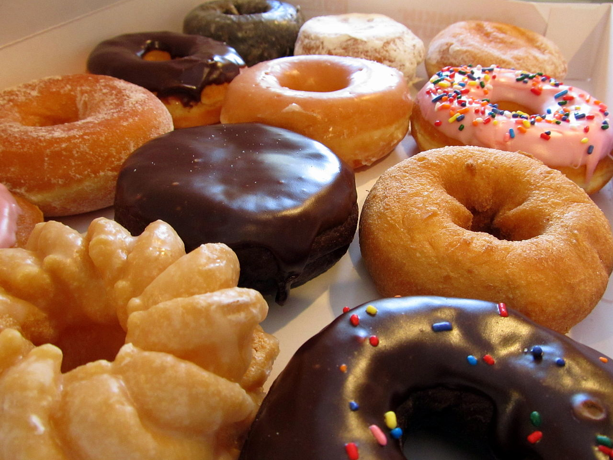

Donuts

Description
These homemade donuts are fluffy, golden, and perfect with a dusting of sugar or a chocolate glaze.
Ingredients
- 2 1/4 tsp active dry yeast
- 1/4 cup warm water (110°F)
- 1 cup warm milk
- 1/4 cup granulated sugar
- 1/4 cup butter (melted)
- 1/2 tsp salt
- 2 eggs
- 4 cups all-purpose flour
- Oil for frying
Steps
- In a bowl, dissolve yeast in warm water and let it sit for 5 minutes.
- Add milk, sugar, melted butter, salt, eggs, and 2 cups of flour. Mix well.
- Add remaining flour and knead until smooth.
- Cover and let the dough rise until doubled (about 1 hour).
- Roll out dough and cut into donut shapes.
- Let the donuts rise again for 30 minutes.
- Heat oil in a deep fryer or pan to 350°F (175°C).
- Fry donuts until golden on both sides. Drain on paper towels.
- Dust with sugar or glaze as desired. Enjoy!
Back to Home